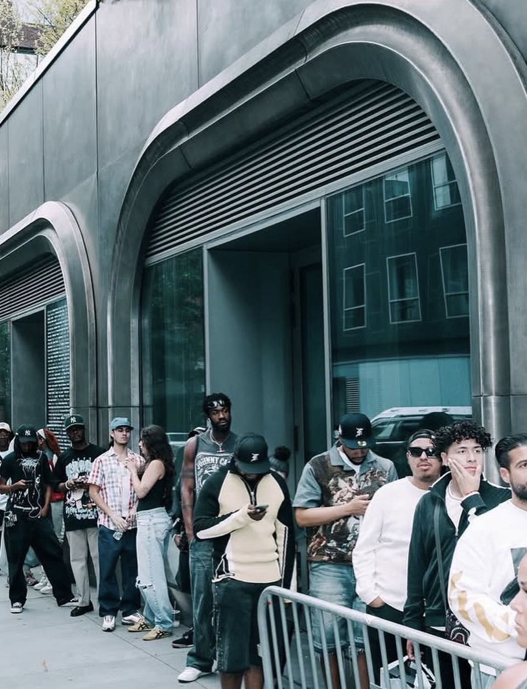
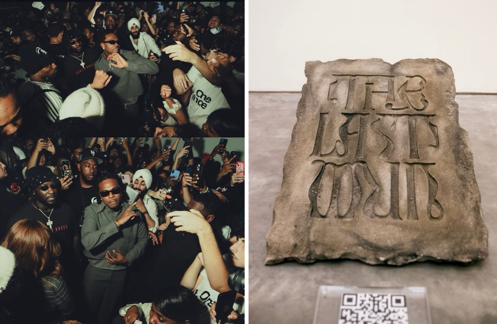
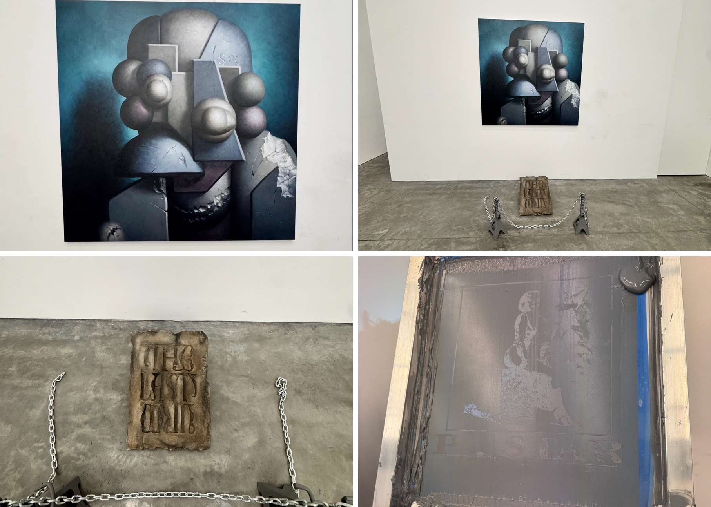
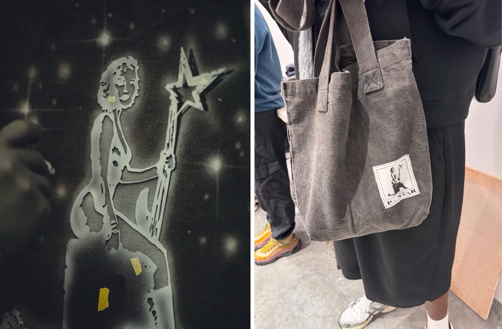

Project 07 — Activation / Album Pop-Up, New York
Gunna / The Last Wun Pop-Up
About the project
A one-day pop-up in New York in August 2025 for Gunna's The Last Wun: PAZL® designed the space, the experience and the activation, with P.Star merchandise built for the drop. Devon DeJardin's cover-art painting hung as a gallery installation beside a carved stone tablet of the title.
PAZL® designs and produces activations end to end: the space, the objects inside it, and the pieces people leave with.




Credits
- Space design, experience & activation
- PAZL®
- Merchandise design
- P.Star
- Cover art painting
- Devon DeJardin
- Creative direction
- Fred Saint Foster
- Artist
- Gunna